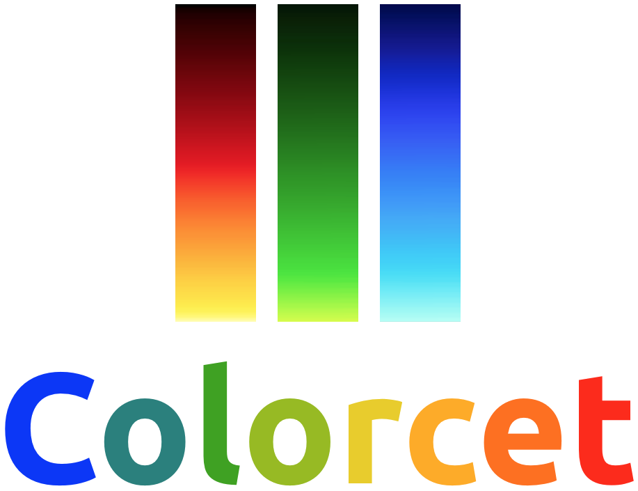
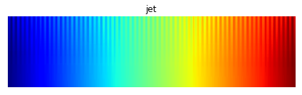
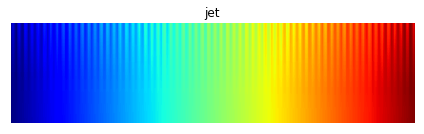
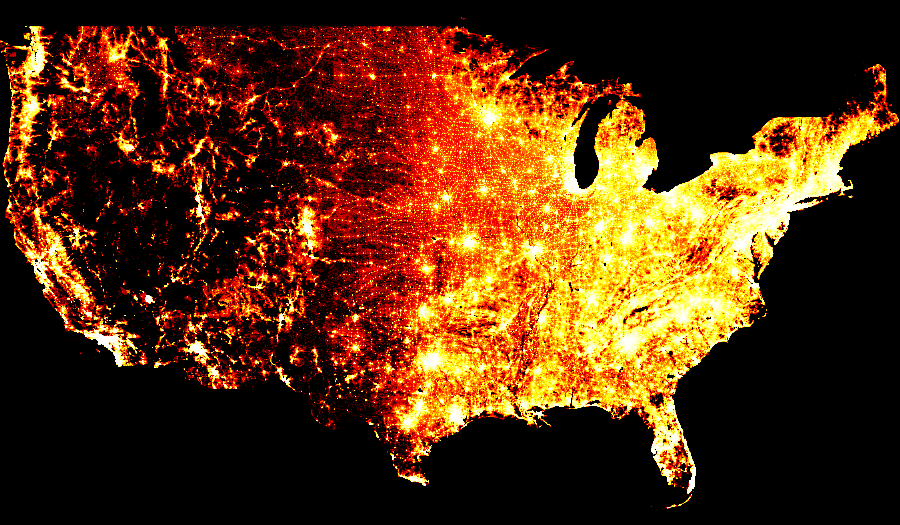

Collection of perceptually accurate colormaps¶
Colorcet is a collection of perceptually acccurate 256-color colormaps for use with Python plotting programs like Bokeh, Matplotlib, HoloViews, and Datashader.
There are two types of colormaps currently included: continuous and categorical. The continuous colormaps are perceptually uniform, with each new color equally perceptually distinct from the previous and following colors. The continuous maps were constructed by Peter Kovesi at the Center for Exploration Targeting using the methods described in Kovesi (2015).
The categorical colormaps are perceptually distinct, but not uniform; each color is meant for a separate category and not as a position on a numerical scale. Here, categorical colormaps of arbitrary length are generated to cover a perceptual space with well-separated samples, using the method from Glasbey, van der Heijden, Toh, & Gray (2007).
See Getting Started for installation info, and the User Guide for more info on what colormaps are available and how to use them.
Background¶
Apart from the four uniform colormaps now provided with matplotlib, most continuous colormaps shipping with Python plotting programs are highly perceptually nonuniform. That is, small changes in data values result in large changes in the perceptual appearance of the corresponding colors, or vice versa. For instance, the popular matplotlib "hot" and "jet" colormaps have long stretches where the apparent colors change imperceptibly, such as the yellow region in "hot" and the cyan/green region in "jet":
 

When colormaps are used for visualizing scientific datasets, these perceptual nonlinearities can make interpretation of this data very difficult, because false boundaries appear in the data, and genuine boundaries and changes can be obscured.
Matplotlib now offers a tool to construct uniform colormaps, but it doesn't yet allow construction of colormaps like those above. To address this need, Peter Kovesi at the Center for Exploration Targeting created a set of colormaps that are sampled uniformly in a perceptual color space, using methods he describes in a paper on arXiv. For instance, the perceptually uniform versions of the above colormaps are called "fire" and "rainbow" in this package:


You should be able to see the differences right away, revealing more detail, more faithfully than if you use non-uniform maps. For instance, here is a population-density dataset (from datashader) rendered with the original matplotlib "hot" colormap:

and the same dataset rendered with colorcet's "fire" colormap:

It should be obvious that the "hot" version completely washes out detail at the high end, as if the image is overexposed, while "fire" makes detail visible throughout the data range. Yet the qualitative effect is still roughly similar, allowing "fire" to be used in nearly any situation where the original "hot" was useful.
Peter provides versions of 50 perceptually uniform colormaps for a variety of different plotting programs, and this package provides those colormaps ready to use from within Python programs. The colormaps are all illustrated in the user guide that describes the different types available and allows you to test how perceptually uniform they are on your particular display device.
Peter's methods differ from those used in Matplotlib's uniform colormaps (as implemented in their viscm tool), which (apart from using a different color model) are designed to satisfy different constraints. For instance, mpl's colormaps are always perceptually uniform in their monochrome representation, not just their original color representation, and are safe for colorblind viewers, neither of which are necessarily true of these colormaps. On the other hand, colormaps like "fire" above, i.e., a usable perceptually equivalent of matplotlib/matlab's "hot", are not obtainable using viscm in any straightforward way, limiting the range of useful colormaps that can be created. In any case, this package focuses on making a set of useful colormaps readily available from within Python programs, rather than providing tools for building novel colormaps, for which see the viscm tool and Peter's original site.
Colorcet also includes categorical colormaps that provide large numbers of distinct colors sampled systematically from a perceptually uniform space. These maps are made with similar methods, but with a goal of having recognizable different colors rather than showing an ordering like the perceptually uniform maps above.
Learning more¶
You can see all the details about the methods used to create these colormaps in Peter Kovesi's 2015 arXiv paper and in Glasbey et al. 2007. Other useful background is available in a 1996 paper from IBM.
The Matplotlib project also has a number of relevant resources, including an excellent 2015 SciPy talk, the viscm tool for creating maps like the four in mpl, the cmocean site collecting a set of maps created by viscm, and the discussion of how the mpl maps were created.
Samples¶
All the colorcet colormaps that have short, memorable names (which are probably the most useful ones) are visible here:

But the complete set of 60+ is shown in the User Guide.